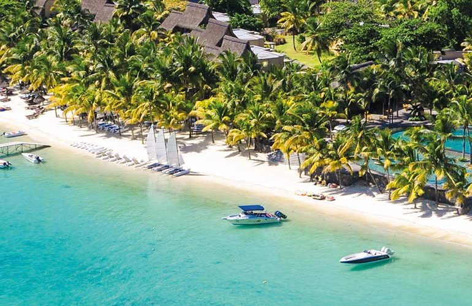
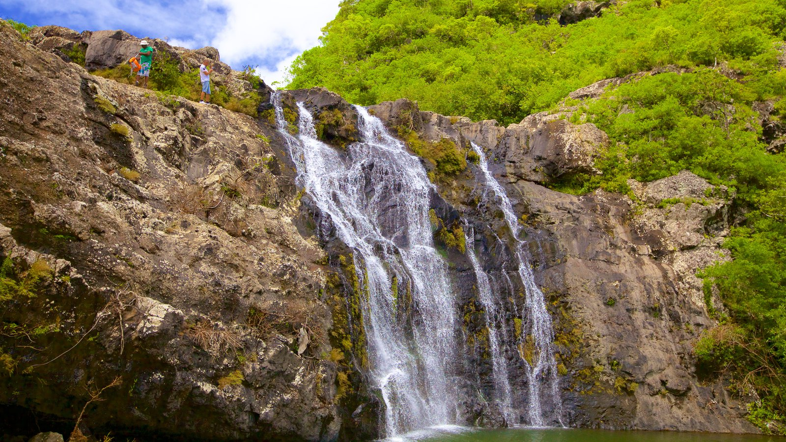
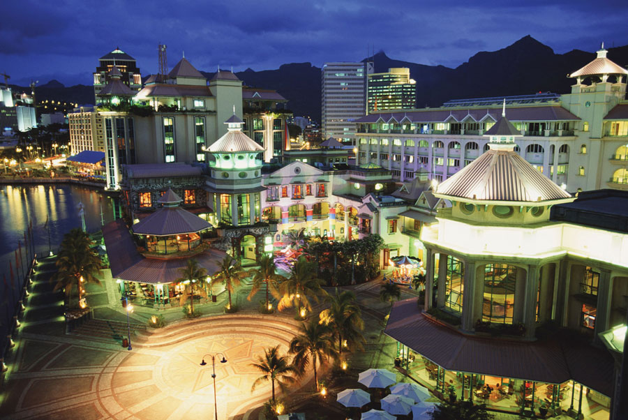
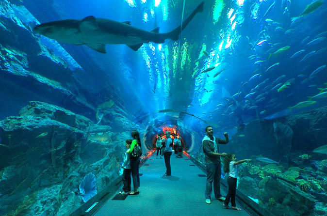
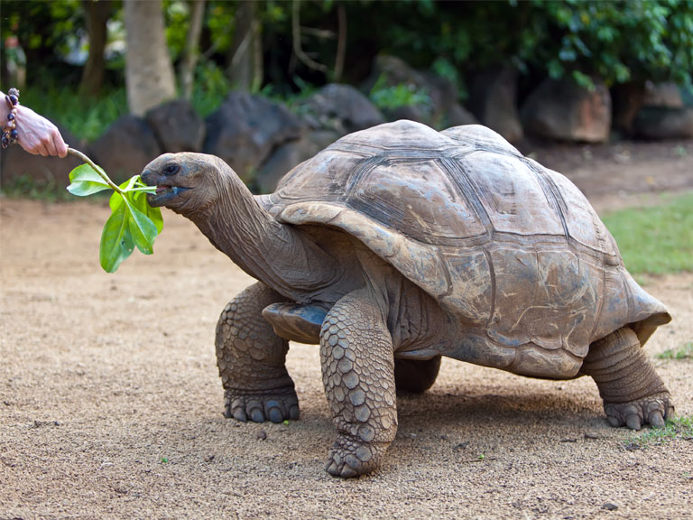

Trou Aux Biches

For those who love snorkeling and swimming, Trou Aux Biches should be the first place to visit in Mauritius. With gentle sands shelving calm, shallow and clear water, this is an ideal place for a beach picnic with family and friends. If you love street food, hog at the numerous stalls and cafes along the coast. A variety of cuisines can be tried here.
Famous for:Trou Aux Biches is best known for swimming and snorkeling.
Tamarind Waterfalls

Tamarind Waterfalls are one of the best things to see in Mauritius. The waterfalls comprise of a series of seven cataracts located on the Tamarin River, and hence are often called the Seven Cascades.
Famous for:A variety of activities like hiking, canyoneering, cliff jumping, bird-watching, and swimming.
Moka
 This is the place for lifestyle shopping from your favorite brands such as Armani Jeans, Body & Soul, Celio, Colors & Senses, Esprit, and Hugo Boss, among others.
Sugar Museum
 And just when you thought places to visit in Mauritius got boring, the Sugar museum amuses you. It dates back to the time when sugar was given equal importance as gold. It is a treat for historians as it displays the 250 years old heritage of the sugar adventure that the whole country saw. Once you are free from the 1.5 hour tour, rum and sugar tasting sessions will be waiting for you to end the journey on a high note (hick-hick).
And just when you thought places to visit in Mauritius got boring, the Sugar museum amuses you. It dates back to the time when sugar was given equal importance as gold. It is a treat for historians as it displays the 250 years old heritage of the sugar adventure that the whole country saw. Once you are free from the 1.5 hour tour, rum and sugar tasting sessions will be waiting for you to end the journey on a high note (hick-hick).
Mauritius Aquarium

The aquarium, located in a small relaxing village in the North West of Mauritius, is home to a large number of species including over 200 species of fish, invertebrates, live coral and sponges, originating from the waters around the island.
The newly designed architecture of the aquarium shows off what the aquarium has to offer to a better degree.
In the Aquarium you are able to enjoy a unique walk on the ocean floor observing the many types of aquatic animals that Mauritius ocean eco-system has to offer.
Parc Francois Leguat

Parc Francois Leguat is one of the sought after wildlife parks in Rodrigues Island, Mauritius. It is even called the turtle park, as there are hundreds and thousands of turtles of different ages. This place should be preferred if you are looking forward to some quality family time
Famous for:Turtle population; BTW, do you like turtles?